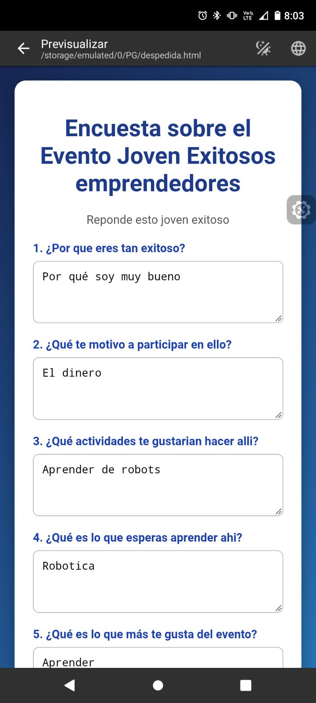
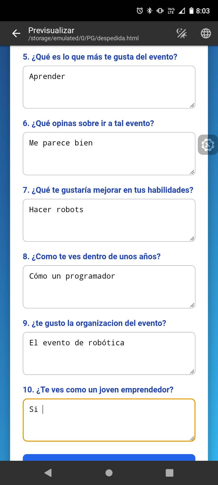
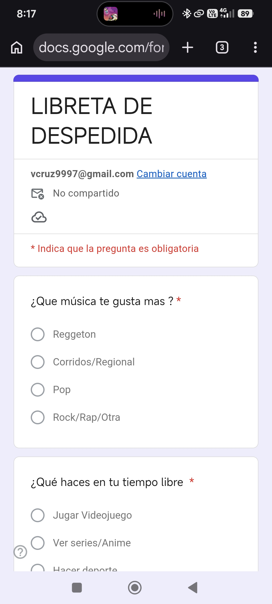
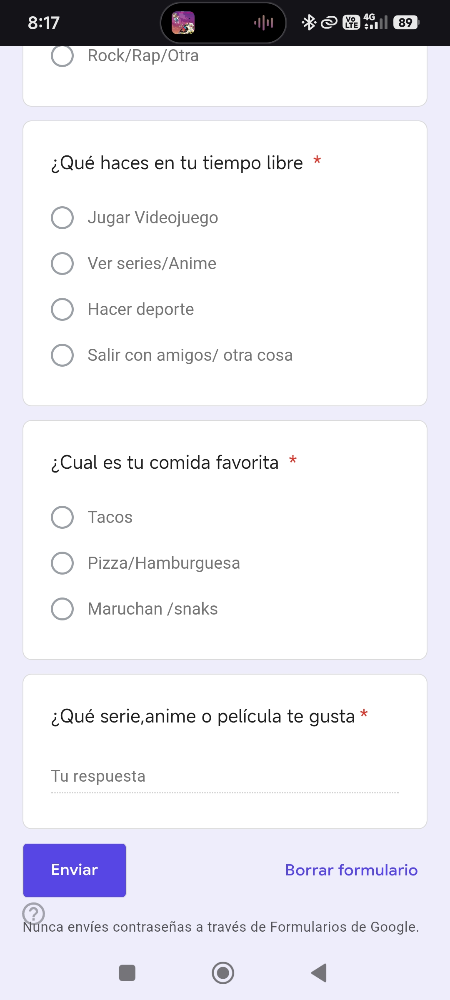
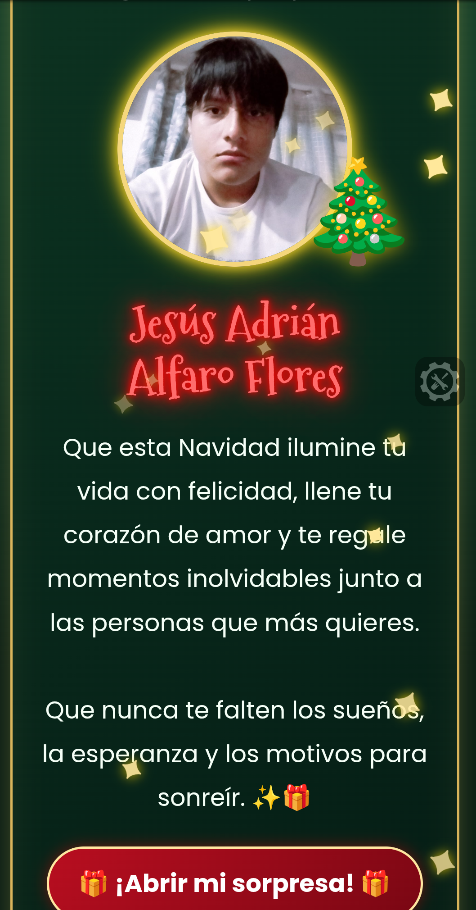
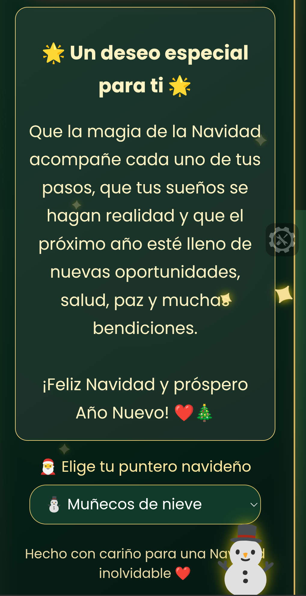
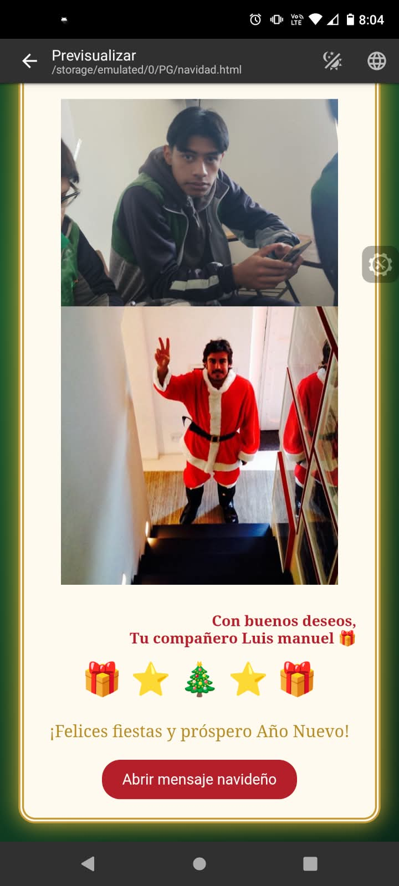
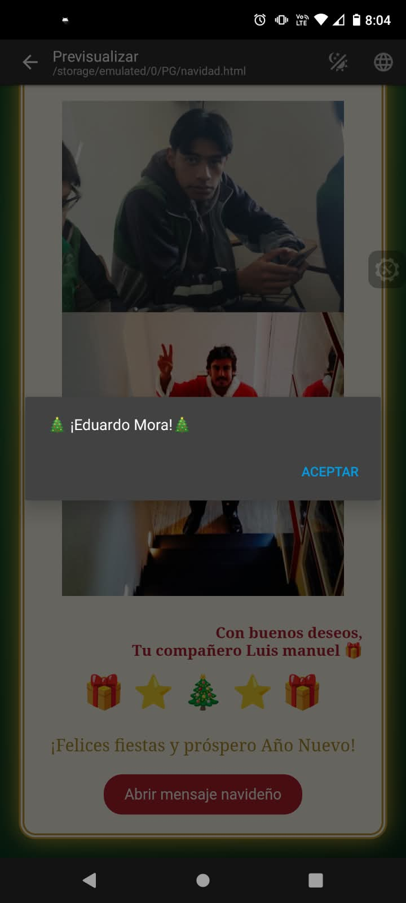
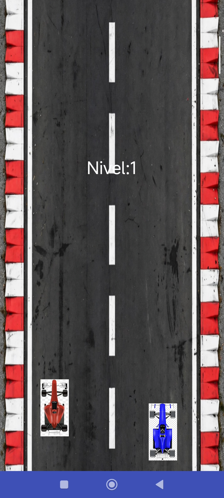
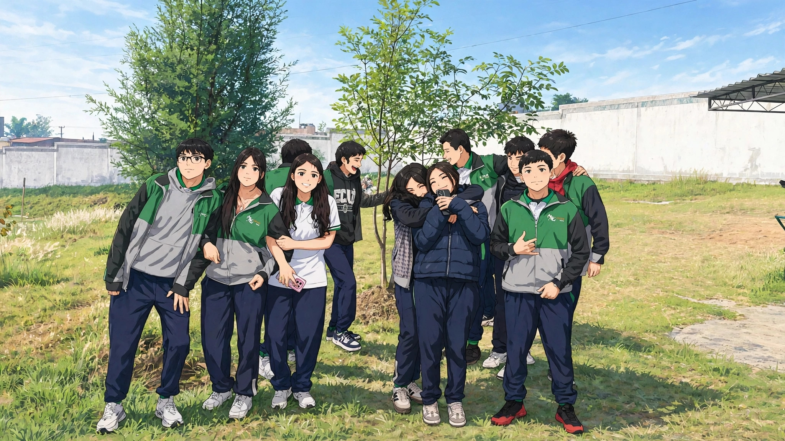

01. Formulario Jóvenes Exitosos
Aprendimos a crear un documento HTML para diseñar un formulario sobre los jóvenes exitosos, explorar este tema y realizar una encuesta.


02. Formulario de clase
Hicimos otro formulario para explorar temas vistos en clase. Los formularios permiten recopilar información de manera organizada.


03. Carta navideña
Creamos una carta navideña utilizando HTML mediante un sorteo. Aprendimos a incorporar elementos temáticos y creativos a nuestras páginas web.


04. Carta de Navidad 2
Las cartas navideñas nos permitieron explorar nuevas posibilidades para nuestras páginas web y convivir con nuestros compañeros mediante la actividad del amigo secreto.


05. App de App Inventor
Desarrollamos un videojuego de carreras en el que competimos contra un oponente controlado por un robot. El objetivo es avanzar por la pista y superar al rival.

06. Mis aprendizajes de M4S1
En esta sección presento dos videos en los que comparto mis aprendizajes, actividades y experiencias durante los tres parciales de M4S1. A través de estos proyectos pude desarrollar mis habilidades y reforzar mis conocimientos.
🎬 Video 1. Mis aprendizajes
Resumen de los conocimientos adquiridos durante los tres parciales.
🎬 Video 2. Mi experiencia
Presentación de mis trabajos, experiencias y aprendizajes de M4S1.
07. Proyecto transversal de Inglés: Christmas Carol
Este proyecto transversal consiste en presentar un villancico navideño en inglés. Con esta actividad ponemos en práctica la pronunciación, la comprensión del idioma, la creatividad y el trabajo en equipo.
🎬 Video del villancico
Presentación de nuestro villancico navideño en inglés.
🖼️ Imagen del proyecto
Imagen representativa de nuestro proyecto transversal navideño.
